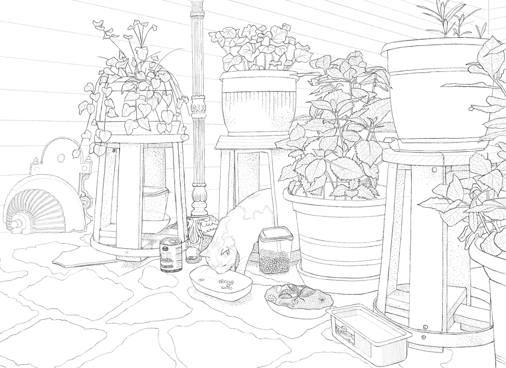
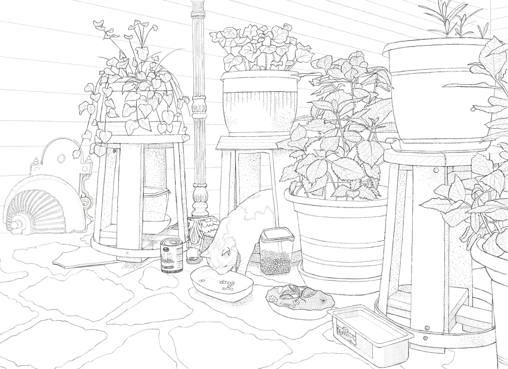

Personal
About Me
Creative, Analytical, Courageous, Goal Oriented, ADHD. Personality Type: INFJ
My name is Lorien Gugich. I'm a free spirited 33 year old who is passionate about living life authentically, always striving for what's next.
I advocate for inclusivity, while creating more awareness around mental health and neurodiversity. My personality type is INFJ.
I live in Hawke's Bay, New Zealand with my child and our beloved pets. Some of which are our English Bulldog "Chorizo", our Axolotl "Sunny", and our Dove "Marshmallow".
Currently I am studying a Bachelor of Computing Systems to upskill in my career, which is the reason for this website (it's part of my course!).
Art
I have always had an artistic and creative flair, yet it wasn't until the last 4 years where I became more intentional with my desire to hone my skills. I'm still trying to find my art style! Here are some of my recent works, finished and unfinished!
 

Guitar
On New Years Day 2024 I decided that I would finally pick up Guitar, after having always wanted to try it. I knew that I needed to pick a guitar that would make me want to keep playing,
so I chose a Fender Player Stratocaster in Buttercream (yellow)!
I started self-directed lessons through a paid mobile application, and stuck at it! I learned the chords fairly quickly, and my confidence grew. I began to share posts of my
progress on social media, including video's of me singing while playing! I wanted to further improve, so I put some feelers out there to join a local jam group. Shortly after
that, I was invited to perform at The Paisley Stage in Napier. I had a 15 minute slot where I sang and played three songs infront of a live audience. It was certainly a night to remember,
and I hope to do it again.
I have a deep appreciation for how music has shaped my life, and continues to.